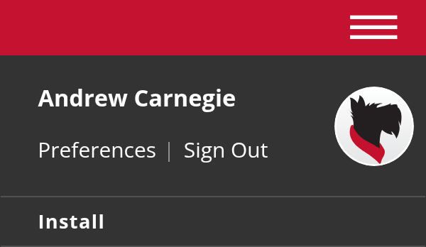

Accounts
The person using an app: their name in the header, signing in, their preferences, pages they can't open, acting as someone else and test accounts to sign in with while you build.
Account Status App
A Sign In link in the roof, beside the menu button, that becomes the user's name once they sign in.

- Signed out, it's styled like the template's header links.
-
Where sign-in starts with a POST, as with OmniAuth and
django-allauth, Sign In is a
<button class="cmu-account">in a form of its own. It looks the same as the link. -
Signed in, it's plain text (
cmu-account-open) that opens the menu, and the Sign-In Button and Box go away. - A signed-in user without access gets the 403 page instead: who the page is for, how to request access and where to go next.
- With the template's search, put it after the search form; the kit places it between the search and the menu button.
- Below 768px, and while the menu is open, the roof's copy hides; the menu has it.
Style
Always “Sign In” and “Sign Out,” never “Log In,” on buttons, links and the menu.
Classes
cmu-account, cmu-account-open,
cmu-account-menu, cmu-account-name
<!-- In .roof, after the wordmark. Signed out: -->
<a class="cmu-account" href="/login">Sign In</a>
<!-- Signed in: -->
<a class="cmu-account cmu-account-open" href="#nav" aria-label="Menu for Andrew Carnegie"
onclick="document.querySelector('.roof .menu-btn').click(); return false;">Andrew Carnegie</a>
<!-- First item in nav#nav > ul. The template shows li.secondary only in the menu.
An <a> without href gets the menu's spacing but isn't a link. -->
<li class="secondary cmu-account-menu">
<a class="cmu-account-name">Andrew Carnegie</a>
<a href="/preferences">Preferences</a>
<a href="/logout">Sign Out</a>
</li>Additional ways to encourage signing in are the Sign-In Button and Sign-In Box.
Profile Picture App
A round picture of the signed-in user, also called an avatar or account photo, before their name in the roof and the menu. Their initials can stand in for a photo. Try it on this site's header.
Classes
cmu-profile-picture, cmu-profile-initials,
data-cmu-name, data-cmu-initials, --cmu-size
Put it before the name, at the start of the roof's account link and of
cmu-account-name in the menu (see Account). A
photo gets empty alt text, since the name is right beside it; initials
are hidden from screen readers. With the name in data-cmu-name, the kit
writes the first letters of the first and last names, so Andrew Carnegie is AC and
Henry Clay Frick is HF. It reads “Carnegie, Andrew” the same way and skips
a suffix such as Jr. If the app already has initials, put them in
data-cmu-initials instead, and the kit uses them as they are. For another
size, set --cmu-size. For a picture without photos, PlaceMellon has a
default profile picture.
Sign-In Button Template
For a page anyone can use, but that does more once the user signs in. One large
outline button at the top of the sidebar, beside the page's lead. It's the template's
simple sidebar box, with btn ghost wide in an
<h1>.
Classes
sidebar, simple, btn ghost wide
Here, in the sidebar of a search page:
Find a Syllabus
Search by course number or title. Sign in to view syllabi and instructors.
Sign-In Box Template
For a page that does little until the user signs in. A red box says what signing in
lets them do, with one wide outline Sign In button, and an optional note under it
about who can sign in. It's the template's sidebar box with red invert,
and btn ghost wide in an <h4>.
Classes
sidebar, red invert, btn ghost wide,
left-rule
Here, beside a page that does little until the user signs in:
Watch the Safety Video
Every driver, pusher and flagger watches it before their first freeroll. It covers helmet and harness checks, hand signals on the course and what to do when a buggy spins out.
If signing in posts a form, use a
<button class="btn ghost wide"> in place of the link. With
cmu-app.css, the two look the same.
Sign-In Page App
A standalone page where the user picks how to sign in. When an Andrew account isn't the only way in, every Sign In link and button comes here instead of going straight to CMU's single sign-on. In development, the Developer Sign-In takes its place.
-
Group the sign-in options. Add
cmu-sign-in-breakto an item that starts a new group, such as the Andrew account button after the social ones. -
A sign-in service's mark is the one icon allowed beside a button's
words, since each service asks for it on its sign-in button. Use its SVG code
instead of an
<img>in the button, so it takes the text color. The SVG for a social service's mark comes from Bootstrap Icons, and for an Andrew account, from PlaceMellon's Sign-In Icon. - Explain a non-obvious account option in a hint under its button.
- Link the site's address under the heading to the site's public page, such as its home page or service description, when it has one. It gives the user a way back without signing in. On a photo, the link stays white and underlined.
Style
The heading should be “Sign In” with no period. Button text for sign-in options should be Title Case, with a prompt to sign in followed by the service name, e.g., “Sign In With Google.”
Classes
cmu-sign-in-page, cmu-sign-in-card,
cmu-sign-in-break, cmu-or, cmu-sign-in-footer,
cmu-sign-in-page--photo, --cmu-sign-in-photo,
btn ghost wide
The whole page, embedded:
<body class="cmu-app">
<div id="container">
<header>
<div class="roof">
<div>
<a class="wordmark" href="https://www.cmu.edu/">Carnegie Mellon University</a>
</div>
</div>
</header>
<main id="content" class="cmu-sign-in-page">
<div class="content">
<div>
<h1>Sign In</h1>
<p>to sweepstakes.example.cmu.edu</p>
</div>
<div class="cmu-sign-in-card">
<ul class="cmu-plain">
<li>
<a class="btn ghost wide" href="/auth/google"><svg class="cmu-sign-in-mark" viewBox="0 0 16 16" fill="currentColor" aria-hidden="true" focusable="false">…</svg>Sign In With Google</a>
</li>
<li>
<a class="btn ghost wide" href="/auth/linkedin"><svg class="cmu-sign-in-mark" viewBox="0 0 16 16" fill="currentColor" aria-hidden="true" focusable="false">…</svg>Sign In With LinkedIn</a>
</li>
<li class="cmu-sign-in-break">
<a class="btn ghost wide" href="/auth/andrew">Sign In With Your Andrew Account</a>
<p class="cmu-hint">New to CMU? Learn about <a class="external" href="…">Andrew accounts</a>.</p>
</li>
</ul>
<p class="cmu-or">or</p>
<p><a class="cta" href="/guest">Sign In With a Guest Account</a></p>
</div>
</div>
</main>
<div class="cmu-sign-in-footer" role="contentinfo">
<ul>
<li>Need help? Email <a href="mailto:example@cmu.edu">example@cmu.edu</a></li>
<li><a href="https://www.cmu.edu/legal/">Legal Info</a></li>
</ul>
</div>
<!-- No menu, but the template's script expects one -->
<nav id="nav" hidden><ul></ul></nav>
</div>
<script src="https://www.cmu.edu/common/standard-v6/js/list.min.js"></script>
<script src="https://www.cmu.edu/common/standard-v6/js/jquery-1.10.1.min.js"></script>
<script src="https://www.cmu.edu/common/standard-v6/js/main.6.7.min.js"></script>
</body>See the Whole PageHide the Whole Page
In Cascade
This component isn't available in Cascade.
In WordPress
This component isn't available in WordPress.
In another CMS
This component isn't available in another CMS.
In Django
django-allauth starts sign-in with a POST, so each sign-in option is a form with the button in it. The rest of the page is the HTML tab's.
{% load socialaccount %}
<ul class="cmu-plain">
<li>
<form method="post" action="{% provider_login_url 'google' %}">
{% csrf_token %}
<button type="submit" class="btn ghost wide"><svg class="cmu-sign-in-mark" viewBox="0 0 16 16" fill="currentColor" aria-hidden="true" focusable="false">…</svg>Sign In With Google</button>
</form>
</li>
<li>
<form method="post" action="{% provider_login_url 'linkedin' %}">
{% csrf_token %}
<button type="submit" class="btn ghost wide"><svg class="cmu-sign-in-mark" viewBox="0 0 16 16" fill="currentColor" aria-hidden="true" focusable="false">…</svg>Sign In With LinkedIn</button>
</form>
</li>
<li class="cmu-sign-in-break">
<form method="post" action="{% provider_login_url 'microsoft' %}">
{% csrf_token %}
<button type="submit" class="btn ghost wide">Sign In With Your Andrew Account</button>
</form>
<p class="cmu-hint">New to CMU? Learn about <a class="external" href="…">Andrew accounts</a>.</p>
</li>
</ul>In Rails
OmniAuth starts sign-in with a POST, so each sign-in option is a
button_to: a form with the button in it. Turbo stays out of it, since
sign-in leaves for another site. The rest of the page is the HTML tab's.
<ul class="cmu-plain">
<li>
<%= button_to "/auth/google_oauth2", class: "btn ghost wide", form: { data: { turbo: false } } do %>
<svg class="cmu-sign-in-mark" viewBox="0 0 16 16" fill="currentColor" aria-hidden="true" focusable="false">…</svg>Sign In With Google
<% end %>
</li>
<li>
<%= button_to "/auth/linkedin", class: "btn ghost wide", form: { data: { turbo: false } } do %>
<svg class="cmu-sign-in-mark" viewBox="0 0 16 16" fill="currentColor" aria-hidden="true" focusable="false">…</svg>Sign In With LinkedIn
<% end %>
</li>
<li class="cmu-sign-in-break">
<%= button_to "/auth/entra_id", class: "btn ghost wide", form: { data: { turbo: false } } do %>
Sign In With Your Andrew Account
<% end %>
<p class="cmu-hint">New to CMU? Learn about <a class="external" href="…">Andrew accounts</a>.</p>
</li>
</ul>In {framework}
The Sign-In Page is a whole page, not a component: serve the HTML tab's page as an
HTML file of its own, such as public/login.html, which the dev server
and the build serve as it is.
In Astro
Make the HTML tab's page an Astro page, such as src/pages/login.astro,
with is:inline on the template's scripts, so Astro leaves them as they
are.
For a background photo, add cmu-sign-in-page--photo to
main and put the photo in its style:
style="--cmu-sign-in-photo: url('/images/photo.jpg')". The address can be
relative to the page, like any other. Any shape works: the photo fills the space, and
wide screens crop more from its bottom than its top. Use one at least 2,000 pixels
wide and under about 500 KB, as a JPEG, WebP or PNG. A photo is smallest as WebP or
JPEG; PNG suits flat artwork.
Developer Sign-In AppScript
A page that stands in for single sign-on while you build an app. Outside production, Sign In comes here instead of going to the identity provider: pick a test account to sign in as that person. It takes the place of the Sign-In Page until real sign-in is set up, and it's built the same way.
- Never in production. Add the page's routes only outside production, and refuse them in the controller too, so a slip in the routes can't open it.
-
Send the user back to the page they came from
(
?return_to=), as real sign-in does. -
With more than about 10 people, add a search box over the buttons,
with
data-cmu-filterset to the list's id and a count under it, as with a filtered table. -
Start each button's name with hidden words for screen readers
(
<span class="sr-only">Sign in as </span>), so the button reads “Sign in as Margaret Morrison” and then the role.
Style
Label it “Development Mode” and head it “Pick a Test Account.” Give each role a few words on what it can do, starting with what that person sees. Mark the current person “You.”
Classes
cmu-sign-in-page--dev, cmu-dev-people,
cmu-dev-card, cmu-dev-card--out, cmu-dev-you,
aria-current, with the Sign-In Page's classes
The whole page, embedded. Pick someone, and the You tab moves to them:
<body class="cmu-app">
<div id="container">
<header>
<div class="roof">
<div>
<a class="wordmark" href="https://www.cmu.edu/">Carnegie Mellon University</a>
</div>
</div>
</header>
<main id="content" class="cmu-sign-in-page cmu-sign-in-page--dev cmu-sign-in-page--photo"
style="--cmu-sign-in-photo: url('/images/photo.jpg')">
<div class="content">
<div>
<h1>Sign In</h1>
<p>to <a href="/">sweepstakes.<wbr>example.cmu.edu</a></p>
</div>
<div class="cmu-sign-in-card">
<p class="cmu-label">Development Mode</p>
<h2>Pick a Test Account</h2>
<ul class="cmu-dev-people">
<li aria-current="true">
<div class="cmu-dev-card">
<i class="cmu-profile-picture cmu-profile-initials" aria-hidden="true">AC</i>
<strong>Andrew Carnegie</strong>
<span>Sweepstakes Chair</span>
<small>Everything, including settings and acting as someone else.</small>
<span class="cmu-dev-you">You</span>
</div>
</li>
<li>
<form method="post" action="/dev/sign_in/2">
<input type="hidden" name="return_to" value="/teams">
<button type="submit" class="cmu-dev-card btn ghost">
<i class="cmu-profile-picture cmu-profile-initials" aria-hidden="true">MM</i>
<strong><span class="sr-only">Sign in as </span>Margaret Morrison</strong>
<span>Team Captain</span>
<small>Their team's roster, buggies and roll times.</small>
</button>
</form>
</li>
<li>
<form method="post" action="/dev/sign_in/3">
<input type="hidden" name="return_to" value="/teams">
<button type="submit" class="cmu-dev-card btn ghost">
<i class="cmu-profile-picture cmu-profile-initials" aria-hidden="true">AM</i>
<strong><span class="sr-only">Sign in as </span>Andrew Mellon</strong>
<span>Driver</span>
<small>Their own heats and roll times.</small>
</button>
</form>
</li>
<li>
<form method="post" action="/dev/sign_in/4">
<input type="hidden" name="return_to" value="/teams">
<button type="submit" class="cmu-dev-card btn ghost">
<i class="cmu-profile-picture cmu-profile-initials" aria-hidden="true">TM</i>
<strong><span class="sr-only">Sign in as </span>Test Mechanic</strong>
<span>Mechanic</span>
<small>Safety inspections for every team's buggy.</small>
</button>
</form>
</li>
<li>
<form method="post" action="/dev/sign_in/5">
<input type="hidden" name="return_to" value="/teams">
<button type="submit" class="cmu-dev-card btn ghost">
<i class="cmu-profile-picture cmu-profile-initials" aria-hidden="true">TS</i>
<strong><span class="sr-only">Sign in as </span>Test Spectator</strong>
<span>Spectator</span>
<small>Signed in, with no team yet.</small>
</button>
</form>
</li>
<li>
<form method="post" action="/dev/sign_out">
<input type="hidden" name="return_to" value="/teams">
<button type="submit" class="cmu-dev-card cmu-dev-card--out btn ghost">
<i class="cmu-profile-picture cmu-profile-initials" aria-hidden="true"></i>
<strong>Signed Out</strong>
<span>Visitor</span>
<small>See what a visitor sees.</small>
</button>
</form>
</li>
</ul>
</div>
</div>
</main>
<div class="cmu-sign-in-footer" role="contentinfo">
<ul>
<li>Need help? Email <a href="mailto:example@cmu.edu">example@cmu.edu</a></li>
<li><a href="https://www.cmu.edu/legal/">Legal Info</a></li>
</ul>
</div>
<!-- No menu, but the template's script expects one -->
<nav id="nav" hidden><ul></ul></nav>
</div>
<script src="https://www.cmu.edu/common/standard-v6/js/list.min.js"></script>
<script src="https://www.cmu.edu/common/standard-v6/js/jquery-1.10.1.min.js"></script>
<script src="https://www.cmu.edu/common/standard-v6/js/main.6.7.min.js"></script>
<script src="https://cdn.jsdelivr.net/gh/cmu-web/cmu-web-kilt@0.8.21/js/cmu-app.js" integrity="sha384-CPOgu2wejG5jw+M3AjAHTVL4utIb3Vz56otK2K1Cb+oCRcK3nSlY6wlBTv+kvOM9" crossorigin="anonymous"></script>
</body>See the Whole PageHide the Whole Page
In Cascade
This component isn't available in Cascade.
In WordPress
This component isn't available in WordPress.
In another CMS
This component isn't available in another CMS.
In Django
Add the URLs only when DEBUG is on:
# urls.py
if settings.DEBUG:
urlpatterns += [
path("dev/sign-in/", views.dev_sign_in, name="dev_sign_in"),
path("dev/sign-in/<int:pk>/", views.dev_sign_in_as, name="dev_sign_in_as"),
]
# views.py
@require_POST
def dev_sign_in_as(request, pk):
if not settings.DEBUG:
raise Http404
login(request, get_user_model().objects.get(pk=pk))
to = request.POST.get("return_to", "/")
return redirect(to if url_has_allowed_host_and_scheme(to, None) else "/")In Rails
Draw the routes only outside production, and refuse them in the controller too:
# config/routes.rb
unless Rails.env.production?
get "dev/sign_in", to: "dev_sessions#new", as: :dev_sign_in
post "dev/sign_in/:id", to: "dev_sessions#create", as: :dev_sign_in_as
end
# app/controllers/dev_sessions_controller.rb
class DevSessionsController < ApplicationController
before_action { head :not_found if Rails.env.production? }
def new
@people = User.where(test_person: true)
end
def create
session[:user_id] = User.find(params[:id]).id
path = params[:return_to].to_s
redirect_to path.start_with?("/") && !path.start_with?("//") ? path : root_path
end
end
<%# Sign In, in the header %>
<%= link_to "Sign In", Rails.env.production? ? login_path : dev_sign_in_path(return_to: request.fullpath) %>In {framework}
The server draws this page and signs the user in, not {framework}'s components:
serve the HTML tab's page from it. Add its routes only when
NODE_ENV isn't production. With Express:
if (process.env.NODE_ENV !== "production") {
app.get("/dev/sign-in", (req, res) =>
res.render("dev-sign-in", { people: testPeople, returnTo: req.query.return_to }));
app.post("/dev/sign-in/:id", (req, res) => {
req.session.userId = req.params.id;
const to = String(req.body.return_to || "/");
res.redirect(to.startsWith("/") && !to.startsWith("//") ? to : "/");
});
}
With a picture, use <img class="cmu-profile-picture" alt=""> in
place of the initials.
Tip
While the app runs in development, mark every page with the Site Bar's caution tape, so screenshots can't pass for production, and a gold bar naming the test account, with a call to action back to this page.
Link, Button or Box?
Pages past the home page, and pages where signing in adds nothing, get the header's Sign In link alone.
A page people can use without signing in gets the Sign-In Button. The page's own content comes first, and the button is there for the extras.
A page with little to show until the user signs in gets the Sign-In Box, which says what signing in lets them do, not just that they must.
A site with more than one way in, such as Andrew accounts and Google, sends every Sign In to the Sign-In Page, where the user picks one, instead of straight to CMU's single sign-on.
A link to a page that requires signing in stays visible, with
[login required] after it, not hidden.
Preferences App
Settings that belong to one person, such as which emails they get, on a page of their own reached from Preferences under their name in the menu. It's an ordinary form: group related choices under a legend, save them with one button and confirm with a flash message ("Preferences saved."). Don't put account settings such as passwords here; Computing Services manages Andrew accounts.
Preferences
Acting as Another User App
When an administrator uses the app as someone else, to see what they see or to help them, the whole window should look different, so nobody forgets whose account they're in. The kit puts a thick teal frame around the window and a teal bar along the bottom of the window that stays in view as you scroll, saying who you're acting as, with a way to stop. No other kit component uses teal, so it can't be mistaken for a flash or an announcement.
-
Add
cmu-acting-asto<body>, and put the bar anywhere inside it; the kit pins it to the bottom of the window and leaves room for it under the page. - Name the person and their Andrew ID, and make Stop a button that ends the session and returns the administrator to their own account.
-
Don't use the template's red alert bar (
#campusAlert) for this: it's for campus emergencies.
Classes
cmu-acting-as, cmu-acting-bar